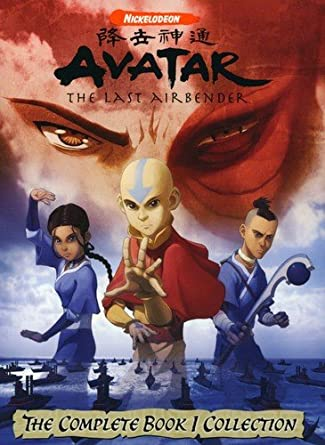
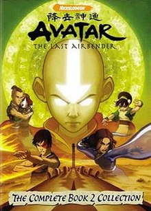

Story
Avatar: The Last Airbender is set in a world where human civilization consists of four nations, named after the four classical elements: the Water Tribes, the Earth Kingdom, the Fire Nation, and the Air Nomads. In each nation, certain people, known as "benders" (waterbenders, earthbenders, firebenders and airbenders), have the ability to telekinetically manipulate and control the element corresponding to their nation, using gestures based on Chinese martial arts. The Avatar is the only person with the ability to bend all four elements. The Avatar is an international arbiter whose duty is to maintain harmony among the four nations, and act as a mediator between humans and spirits. When the Avatar dies, their spirit is reincarnated in a new body, who will be born to parents in the next nation in a set order known as the Avatar cycle: Fire Nation, Air Nomads, Water Tribe, and then Earth Kingdom. By tradition, a new Avatar will travel the world to learn all four bending arts, after which they will begin in earnest their role as global peacekeeper. The Avatar can enter a condition known as "the Avatar State", in which they temporarily gain the skills and knowledge of all their past incarnations. Although this is when the Avatar is most powerful, if the Avatar were ever to be killed while in the Avatar State, the reincarnation cycle would end and the Avatar would never again be reborn.
A century ago, the young Avatar Aang, afraid of his new responsibilities, fled from his home and was forced into the ocean by a storm and encased himself in suspended animation in an iceberg near the South Pole. Shortly after, Fire Lord Sozin, the then-ruler of the Fire Nation, launched a world war to expand his nation's empire. Knowing that the Avatar must be an Air Nomad, he carried out a genocide against the Air Nomads with the help of a comet enhancing firebenders' power. One hundred years later, Katara and Sokka, teenagers of the Southern Water Tribe, accidentally discover Aang and revive him.
Book One: Water
In the first season, Aang travels with Katara and Sokka to the Northern Water Tribe so he can learn waterbending and be prepared to defeat the Fire Nation. Prince Zuko, the banished son of the current Fire Lord Ozai, pursues them, accompanied by his uncle Iroh, hoping to capture the Avatar to restore his honor. Aang is also pursued by Zhao, a Fire Nation admiral aspiring to win Ozai's favor. When his navy attacks the Northern Water Tribe, Zhao kills the moon spirit; Yue, the princess of the tribe, sacrifices her life to revive it, and Aang drives off the enemy fleet.
Book Two: Earth
In the second season, Aang learns earthbending from Toph Beifong, a blind twelve-year-old earthbending prodigy. Zuko and Iroh, now fugitives from the Fire Lord, become refugees in the Earth Kingdom, eventually settling in its capital Ba Sing Se. Both groups are pursued by Azula, Zuko's sister. Aang's group travels to Ba Sing Se to seek the Earth King's support for an attack on the Fire Nation timed to an upcoming solar eclipse, during which firebenders will be powerless. Azula instigates a coup d'état, bringing the capital under Fire Nation control, and Zuko sides with his sister. Aang is mortally wounded by Azula, but he is revived by Katara.
Book Three: Fire

In the third season, Aang and his allies invade the Fire Nation capital during the solar eclipse, but are forced to retreat. Zuko abandons the Fire Nation to join Aang and teach him firebending. Aang, raised by monks to respect all life, wrestles with the possibility that he will have to kill Ozai to end the war. When Sozin's comet returns, Aang confronts Ozai and uses his Avatar powers to strip Ozai of his firebending ability; meanwhile, Aang's friends liberate Ba Sing Se, destroy the Fire Nation airship fleet, and capture Azula. Zuko is crowned the new Fire Lord and ends the war.